New resources
My newest resources appear here first. The list updates automatically.
48 resources
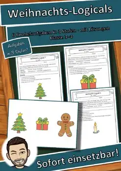
Weihnachts-Logicals: 6 Knobelaufgaben, 3 Stufen (Klasse 3–4)
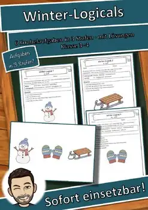
Winter-Logicals: 6 Knobelaufgaben, 3 Stufen (Klasse 3–4)
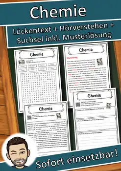
Chemie – Arbeitsblatt Lückentext, Hörverstehen & Suchsel | Deutsch / German
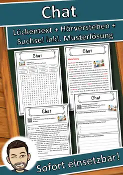
Chat – Arbeitsblatt Lückentext, Hörverstehen & Suchsel | Deutsch / German
Charles der Dritte – Arbeitsblatt Lückentext & Hörverstehen (Deutsch / German)
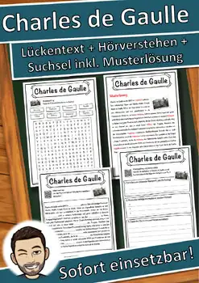
Charles de Gaulle – Arbeitsblatt Lückentext & Hörverstehen (Deutsch / German)
Charles Lindbergh – Arbeitsblatt Lückentext & Hörverstehen (Deutsch / German)
Charles Dickens – Arbeitsblatt Lückentext & Hörverstehen (Deutsch / German)
Charles Darwin – Arbeitsblatt Lückentext & Hörverstehen (Deutsch / German)
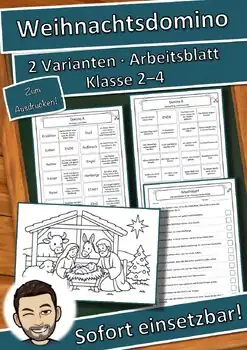
Weihnachtsgeschichte als Domino: 2 Varianten (Klasse 2–4)
Chanukka – Arbeitsblatt Lückentext, Hörverstehen & Suchsel | Deutsch / German
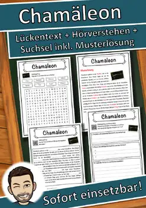
Chamäleon – Arbeitsblatt Lückentext, Hörverstehen & Suchsel | Deutsch / German
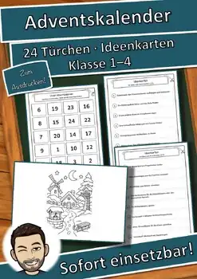
Adventskalender-Vorlage für die Klasse: 24 Türchen (Kl. 1–4)
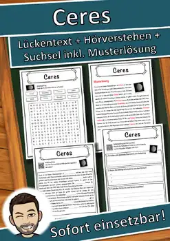
Ceres – Arbeitsblatt Lückentext, Hörverstehen & Suchsel | Deutsch / German
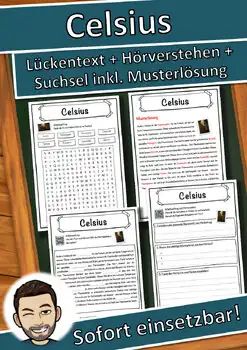
Celsius – Arbeitsblatt Lückentext, Hörverstehen & Suchsel | Deutsch / German
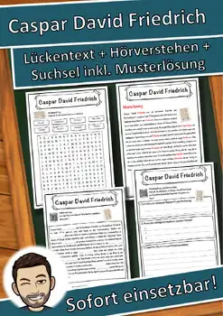
Caspar David Friedrich – Deutsch / German Arbeitsblatt
Casino – Arbeitsblatt Lückentext, Hörverstehen & Suchsel | Deutsch / German
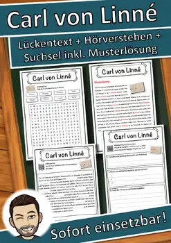
Carl von Linné – Arbeitsblatt Lückentext & Hörverstehen (Deutsch / German)
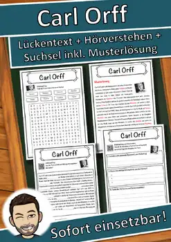
Carl Orff – Arbeitsblatt Lückentext, Hörverstehen & Suchsel | Deutsch / German
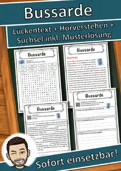
Bussarde – Arbeitsblatt Lückentext, Hörverstehen & Suchsel | Deutsch / German
Burg – Arbeitsblatt Lückentext, Hörverstehen & Suchsel | Deutsch / German
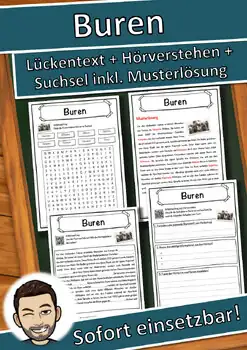
Buren – Arbeitsblatt Lückentext, Hörverstehen & Suchsel | Deutsch / German
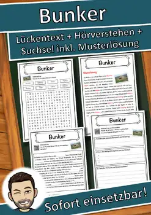
Bunker – Arbeitsblatt Lückentext, Hörverstehen & Suchsel | Deutsch / German
Bundesstaat – Arbeitsblatt Lückentext, Hörverstehen & Suchsel | Deutsch / German
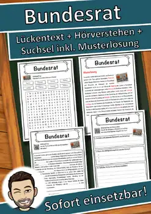
Bundesrat – Arbeitsblatt Lückentext, Hörverstehen & Suchsel | Deutsch / German
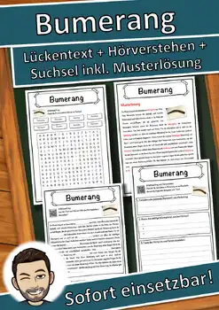
Bumerang – Arbeitsblatt Lückentext, Hörverstehen & Suchsel | Deutsch / German
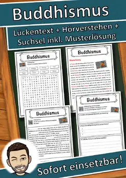
Buddhismus – Arbeitsblatt Lückentext, Hörverstehen & Suchsel | Deutsch / German
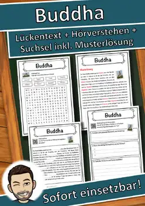
Buddha – Arbeitsblatt Lückentext, Hörverstehen & Suchsel | Deutsch / German
Buckelwal – Arbeitsblatt Lückentext, Hörverstehen & Suchsel | Deutsch / German
Bucht – Arbeitsblatt Lückentext, Hörverstehen & Suchsel | Deutsch / German
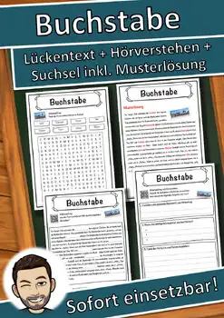
Buchstabe – Arbeitsblatt Lückentext, Hörverstehen & Suchsel | Deutsch / German
Buchen – Arbeitsblatt Lückentext, Hörverstehen & Suchsel | Deutsch / German
Buchdruck – Arbeitsblatt Lückentext, Hörverstehen & Suchsel | Deutsch / German
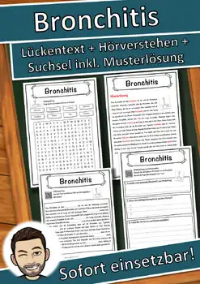
Bronchitis – Arbeitsblatt Lückentext, Hörverstehen & Suchsel | Deutsch / German
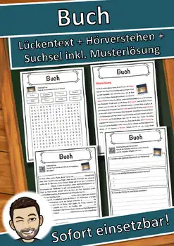
Buch – Arbeitsblatt Lückentext, Hörverstehen & Suchsel | Deutsch / German
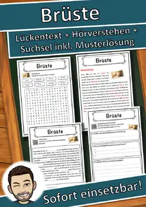
Brüste – Arbeitsblatt Lückentext, Hörverstehen & Suchsel | Deutsch / German
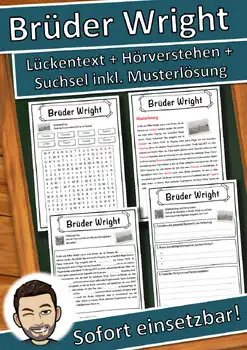
Brüder Wright – Arbeitsblatt Lückentext & Hörverstehen (Deutsch / German)
Brüder Montgolfier – Arbeitsblatt Lückentext & Hörverstehen (Deutsch / German)
Brüder Grimm – Arbeitsblatt Lückentext & Hörverstehen (Deutsch / German)
Brüder Dassler – Arbeitsblatt Lückentext & Hörverstehen (Deutsch / German)
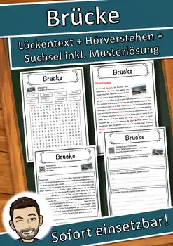
Brücke – Arbeitsblatt Lückentext, Hörverstehen & Suchsel | Deutsch / German
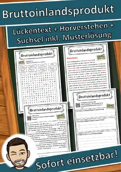
Bruttoinlandsprodukt – Arbeitsblatt Lückentext & Hörverstehen (Deutsch / German)
Brust – Arbeitsblatt Lückentext, Hörverstehen & Suchsel | Deutsch / German
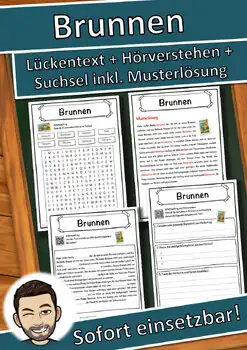
Brunnen – Arbeitsblatt Lückentext, Hörverstehen & Suchsel | Deutsch / German
Bruchrechnung – Arbeitsblatt Lückentext & Hörverstehen (Deutsch / German)
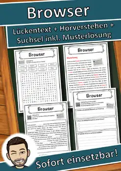
Browser – Arbeitsblatt Lückentext, Hörverstehen & Suchsel | Deutsch / German
Brot – Arbeitsblatt Lückentext, Hörverstehen & Suchsel | Deutsch / German
Bronzezeit – Arbeitsblatt Lückentext, Hörverstehen & Suchsel | Deutsch / German
No resources found – try a different search term or filter.